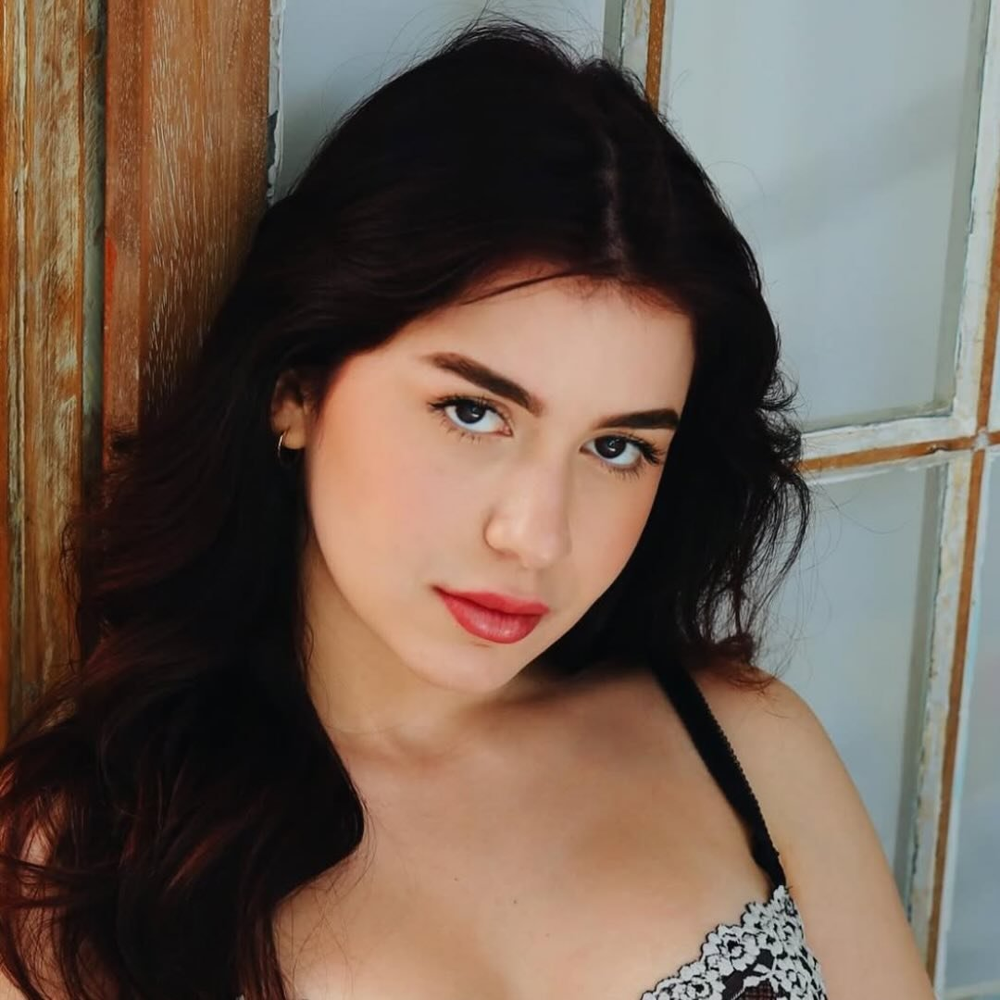

PinkTalk
Bem-vinda ao PinkTalk! üíñ Aqui voc√™ fica sabendo tudo sobre o mundo feminino e muito mais! Hoje vamos falar sobre o dia internacional do podcast, sobre o podcast "POGRAMA" que √© babadeiro no hype e memes e um pouquinho sobre n√≥s, PinkTalk, para voc√™ que caiu de paraquedas aqui. Amiga, vamos lá?!
O que é o Dia Internacional do Podcast?
Você sabia que no dia 30 de setembro é comemorado o Dia Internacional do Podcast? É um dia especial para celebrar essa forma incrível de comunicação que conquistou o mundo digital. Mas, por que o podcast é tão interessante?
Com a versatilidade dessa plataforma, os ouvintes podem explorar uma infinidade de tópicos e perspectivas de especialistas, criativos e entusiastas de diversas áreas.
Além disso, a conveniência de poder ouvir episódios em qualquer lugar e a qualquer momento, seja durante uma caminhada, no trânsito ou enquanto realiza tarefas domésticas, torna essa forma de mídia uma valiosa ferramenta para aprender, se inspirar e se conectar com ideias e pessoas de todo o mundo.
O podcast surgiu nos anos 2000, quando pessoas começaram a gravar programas de áudio e disponibilizar online pra quem quisesse ouvir quando e onde pudesse. O nome vem de “iPod” + “broadcast”.
No Brasil, começou mais tímido por volta de 2010, mas hoje explode em todos os assuntos: moda, beleza, fofoca, cultura pop, histórias reais… pra todo tipo de interesse. O legal é que é íntimo, parece que alguém tá falando só com você, e dá pra ouvir em qualquer lugar.
Ou seja, o podcast é tipo o rádio moderno: acessível, democrático e perfeito pra aprender, se divertir e se inspirar do jeitinho que você quiser.
O que é o POGRAMA?
O POGRAMA é um podcast brasileiro de comédia irreverente, criado em 2024 por Sofia Santino, Doarda e Ciclopin. O programa mistura humor ácido, debates sem filtro e muita zoeira, conquistando rapidamente o público jovem. Disponível no YouTube e no Spotify, já ultrapassou 12 milhões de visualizações no YouTube e atingiu o topo das paradas de podcasts de comédia no Spotify, chegando a ser o #1 ou #2 em audiência geral da plataforma
Apresentadores

Sofia Santino
Nascida em Recife, é influenciadora digital e atriz. Começou sua carreira no Musical.ly (atual TikTok) e se destacou no YouTube com vídeos de humor, maquiagem e lifestyle. Além de apresentar o POGRAMA, Sofia participou de filmes independentes como Sexta-Feira 12 (2022) e A Posição da Morte (2024), e lançou uma linha de delineadores adesivos reutilizáveis em parceria com a marca That Girl

Doarda
Eduarda Hippler. Natural de Santa Catarina, Doarda iniciou sua trajetória no YouTube aos 12 anos e ganhou destaque nacional ao vencer o reality show “Quem Será o Próximo YouTuber de Sucesso” em 2020. Atualmente, vive em São Paulo e compartilha conteúdo sobre humor, beleza e lifestyle. Ela também se identifica como mulher bissexual e defende a importância da representatividade LGBTQIA+ nas redes sociais

Ciclopin
Caick, é um influenciador digital e criador de conteúdo natural de Roraima. Ele iniciou sua carreira na internet em 2019 e, desde então, tem se destacado. Seu canal no YouTube também é um sucesso, onde publica vlogs com seus amigo. Ciclopin é conhecido por seu estilo irreverente e humor ácido, abordando temas do cotidiano com muito sarcasmo e autenticidade.
Além de seu trabalho como criador de conteúdo, Ciclopin também é ator e participou de filmes independentes como Sexta-Feira 12 (2022) e A Posição da Morte (2024)
Por que o POGRAMA é sucesso?
O segredo do sucesso do POGRAMA está na química entre os apresentadores e na proposta de um conteúdo leve, divertido e sem censura. Eles abordam temas variados, desde situações cotidianas até debates mais profundos, sempre com muito humor e autenticidade. O programa se destaca por quebrar tabus e trazer discussões relevantes de forma descontraída, conquistando uma audiência fiel e engajada.
Nosso Podcast üíñ
E claro, não podemos deixar de prestigiar o nosso Podcast! Se você caiu de paraquedas aqui, nosso podcast é um espaço dedicado a entretenimento, cultura pop e dicas para garotas e gays.
Sobre o Podcast
- Fofocas e notícias sobre famosos
- Eventos como Met Gala, Grammy e Oscar
- Dicas de cabelo, maquiagem, unhas e cuidados com a pele
- Moda, tendências e estilos do momento
- Cultura pop, internet e memes virais
- Assuntos que interessam à Geração Z
O que você vai encontrar aqui
- Entrevistas e participações especiais
- Debates sobre tendências e lifestyle
- Histórias engraçadas e experiências pessoais
- Dicas práticas e inspirações para o dia a dia
Nosso objetivo é informar, divertir e inspirar você, sem perder o estilo e a autenticidade PinkTalk.